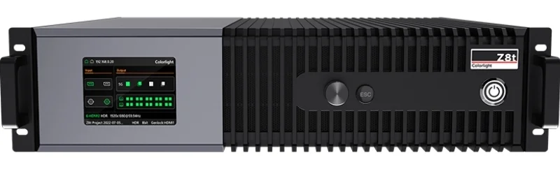
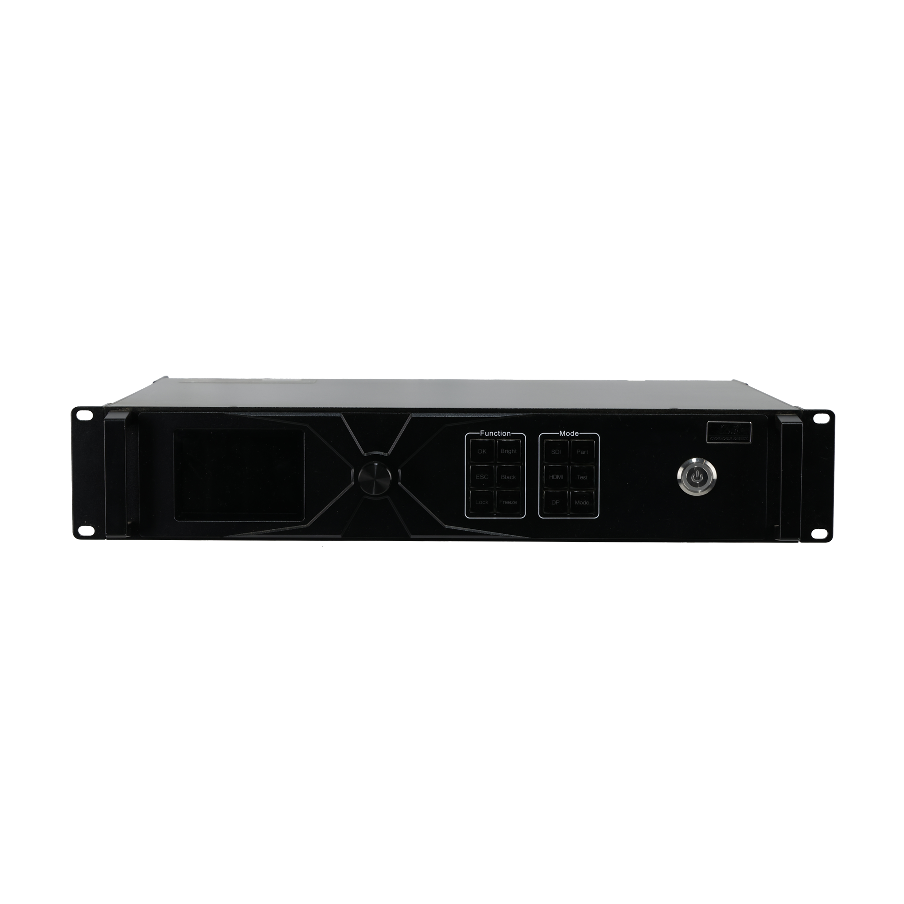
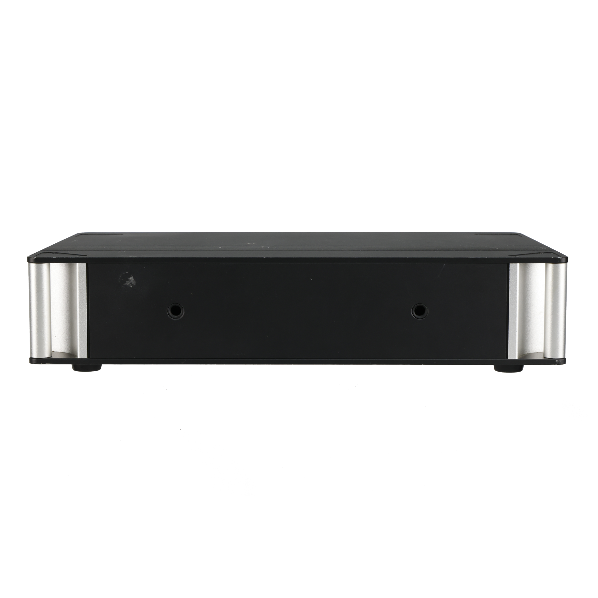
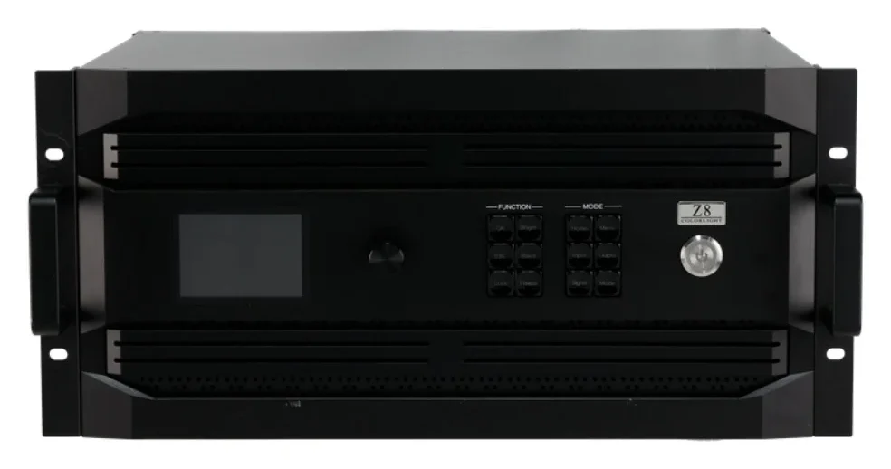

LED画面の画素数は？
パネルの枚数と並び、全体の幅・高さの画素数を共有。
映像をつなぐ・整える ↗EQUIPMENT / 82
LEDプロセッサー
複数の4K映像を、大きなLED画面の配置に合わせて送り出す。
KEY SPECIFICATIONS

画像を大きく見る ＋01 / ROLE & FLOW
実際の配線・端子構成は案件に合わせて決めます。
02 / BEFORE YOUR BRIEF
パネルの枚数と並び、全体の幅・高さの画素数を共有。
HDMI・DisplayPort・12G-SDIなど、送り出し側の端子を合わせる。
操作席からLEDまでの距離で、Ethernetか光かを決める。
03 / CHOOSING THE RIGHT TOOL
大型のLED画面に複数の4K映像を並べる展示・ステージ・中継の検討に。入力ボードは最大2枚で、1枚につき4K入力を2系統まで受けます。
入力・出力ともボードの差し替え式で、どのボードを載せるかで使える端子と容量が変わります。出力ボードは1台の中で同じ種類にそろえる必要があります。同じColorlightのZ5より大きな画面・複数入力に向く位置づけです。手配する個体のボード構成は、見積り時に照合します。
入力ボードは HDMI 2.0×2、DisplayPort 1.2×2、12G-SDI×2、HDMI 2.1・DP 1.4・12G-SDI の3-in-1(ループスルー付き)、ST 2110(SFP28)から選びます。入力の最大解像度は 4096×2160@60Hz、フレームレートは 23.98〜240Hz、色深度は 8/10/12bit です。出力ボードは 5G Ethernet×4、10G 光×2、10G 光×4(主2・予備2)。容量は合計で最大約2,359万画素・最大幅16,384画素、1枚のボードでは幅または高さ最大8,192画素です。電源は AC100〜240V・50/60Hz、定格130W。本体は 482.6×112.0×480.0mm(2.5U、ゴム足を除く)、質量12.70kg。使用温度は -10〜45℃、湿度は 0〜80%RH(結露なきこと)。前面の液晶・ノブ、LAN、RS232、ColorAdapt ソフトウェアで操作します。
LED画面の画素数と並び、入力する映像の本数と端子、操作席からLEDまでの距離をお聞かせください。本体・入出力ボード・光モジュール・ケーブル・設定・本番操作を分けて、必要な範囲を整理します。
04 / RELATED EQUIPMENT
実機の型番と構成を照合して手配します。

見る ↗LEDプロセッサー入力映像を、LED画面の配置に合わせて送り出す。
Colorlight Z5の前面外観。付属品・設定状態は手配内容によります。
見る ↗LEDデータの光変換器離れたLEDへ、光の経路からデータを分ける。
H10FN2の端子のない面。接続側の写真とあわせて外観を確認できます。
見る ↗8K 対応 LEDプロセッサー4K 入力を受けて、8K クラスの大きな LED 画面を動かす。
メーカー製品画像：Colorlight CLT-Z8 見る ↗球体・異形 LED コントローラー
見る ↗球体・異形 LED コントローラー球体やリングなど、四角くない LED に 4K の映像を割り付ける。
メーカー製品画像：Mooncell B800ES